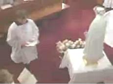
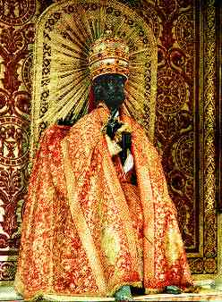
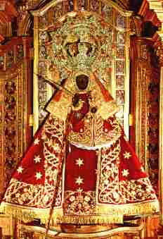
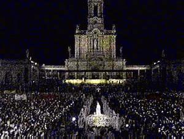
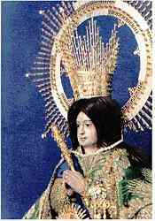
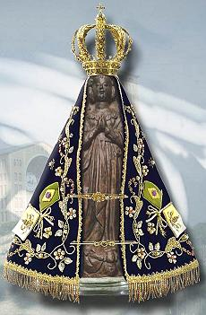

The above photo of a crowned silver statue of Mary being carried in procession is from the Great Procession of Tournai, Belgium, an event which occurs every September to honor the Virgin Mary for her allegedly saving the city from the plague during the Middle Ages. The statue shown is just one of many that are displayed and carried in procession for the event.
May Crowning of Mary Statues and Processions
The month of May is specially devoted by the Catholic Church to the crowning of statues of Mary (perhaps most commonly with flowers), and processions in honor and adoration of the "Queen of Heaven". Below a statue of Mary, crowned with flowers, is knelt before by the priests and congregation, bowing in prayer.
|  | |
| Images © 2001 by EWTN | |
Baruch 6:5 But when you see the multitude behind, and before, adoring them, say you in your hearts: Thou oughtest to be adored, O Lord.
 May, Mary's
Month, Marian Coronation.
May, Mary's
Month, Marian Coronation.
The May Crowning Festival has pagan origins!
May Day
in medieval and modern Europe, day (May 1) for traditional springtime celebrations, probably originating in pre-Christian agricultural rituals. Though local usage varied widely, these celebrations commonly included the carrying in procession of trees, green branches, or garlands; the appointment of a May king and May queen; and the setting up of a May tree or Maypole. Originally such rites were intended to ensure fertility to the crops, and by extension to cattle and human beings, but in most cases this significance was gradually lost, and the practices survived merely as popular festivities.
Source:
Encyclopedia Britannica Online entry on May Day.
Baruch 6:6 For my angel is with you: And I myself will demand an account of your souls.
Baruch 6:7 For their tongue that is polished by the craftsman, and themselves laid over with gold and silver, are false things, and they cannot speak.
Baruch 6:8 And as if it were for a maiden that loveth to go gay: so do they take gold and make them up.
Baruch 6:9 Their gods have golden crowns upon their heads; whereof the priests secretly convey away from them gold, and silver, and bestow it on themselves.
|
Crowned statue of Mary |
|

Baruch 6:10 Yea and they give thereof to prostitutes, and they dress out harlots: and again when they receive it of the harlots, they adorn their gods.
Baruch 6:11 And these gods cannot defend themselves from the rust, and the moth.
Baruch 6:12 But when they have covered them with a purple garment, they wipe their face because of the dust of the house, which is very much among them.
| Statue of Peter photo from "Rome in Colour" copyright by Casa Editrice Lozzi, Rome, 00165 - Via della Lungara, 5. |
Our Lady of Guadalupe photo from "Miraculous Images of Our Lady", by Joan Carroll Cruz -Copyright © 1993, TAN Books and Publishers, INC., Rockford, Illinois 61105. |
|  |  |
| Crowned and dressed statue of Peter in St. Peter's Basilica, the Vatican. |
Crowned and dressed statue of Our Lady of Guadalupe, Caceres, Spain. |
Baruch 6:18 They light candles to them, and in great number, of which they cannot see one: but they are like beams in the house.
...
Baruch 6:25 And having not the use of feet they are carried upon shoulders, declaring to men how vile they are. Be they confounded also that worship them.
|
 |
|
| From the "Be Not Afraid" series of
videos, Copyright ©1993, Apostolate for Family Consecration |
EWTN, May 13, 2010 |
Above at left is a candlelight service with a crowned
statue of Mary being carried in procession in Fatima, Portugal.
Virtually everyone in the crowd is holding a candle. Above at
right the crowned statue of Mary is carried in procession up the promenade at
Fatima with Benedict XVI following in the popemobile.
 Our
Lady of Fatima at Christus Rex.
Our
Lady of Fatima at Christus Rex.
| This is the crowned statue of Our Lady
of Zapopan, said to be the second most venerated image in Mexico
after |
 |
|
 |
Baruch 6:35 They cannot deliver a man from death nor save the weak from
the mighty. Baruch 6:36 They cannot restore the blind man to his sight: nor deliver a man from distress. Baruch 6:37 They shall not pity the widow, nor do good to the fatherless. Baruch 6:38 Their gods, of wood, and of stone, and of gold, and of silver, are like the stones that are hewn out of the mountains: and they that worship them shall be confounded. Baruch 6:71 By the purple also and the scarlet which are motheaten upon
them, you shall know that they are not gods. And they themselves at last are
consumed, and shall be a reproach in the country. |
|
Miraculous crowned statue of |
So, according to the 6th Chapter of Baruch, the ancient pagan Babylonians crowned their statues with crowns of gold or silver, carried them in procession on their shoulders, dressed them with regal clothing, and lit great numbers of candles to these statues of gold, silver, stone and wood. Modern Babylon, the Roman Catholic Church, does exactly and precisely the same to honor its statues of Mary, Jesus and what it calls Saints.
Psa 115:1 Not unto us, O LORD, not unto us, but unto thy name give glory, for thy mercy, and for thy truth's sake.
Psa 115:2 Wherefore should the heathen say, Where is now their God?
Psa 115:3 But our God is in the heavens: he hath done whatsoever he hath pleased.
Psa 115:4 Their idols are silver and gold, the work of men's hands.
Psa 115:5 They have mouths, but they speak not: eyes have they, but they see not:
Psa 115:6 They have ears, but they hear not: noses have they, but they smell not:
Psa 115:7 They have hands, but they handle not: feet have they, but they walk not: neither speak they through their throat.
Psa 115:8 They that make them are like unto them; so is every one that trusteth in them.
Psa 115:9 O Israel, trust thou in the LORD: he is their help and their shield.
Psa 115:10 O house of Aaron, trust in the LORD: he is their help and their shield.
Psa 115:11 Ye that fear the LORD, trust in the LORD: he is their help and their shield.Rev 9:20 And the rest of the men which were not killed by these plagues yet repented not of the works of their hands, that they should not worship devils, and idols of gold, and silver, and brass, and stone, and of wood: which neither can see, nor hear, nor walk:
Rev 18:2 And he cried mightily with a strong voice, saying, Babylon the great is fallen, is fallen, and is become the habitation of devils, and the hold of every foul spirit, and a cage of every unclean and hateful bird.
Rev 18:3 For all nations have drunk of the wine of the wrath of her fornication, and the kings of the earth have committed fornication with her, and the merchants of the earth are waxed rich through the abundance of her delicacies.
Rev 18:4 And I heard another voice from heaven, saying, Come out of her, my people, that ye be not partakers of her sins, and that ye receive not of her plagues.
Rev 18:5 For her sins have reached unto heaven, and God hath remembered her iniquities.